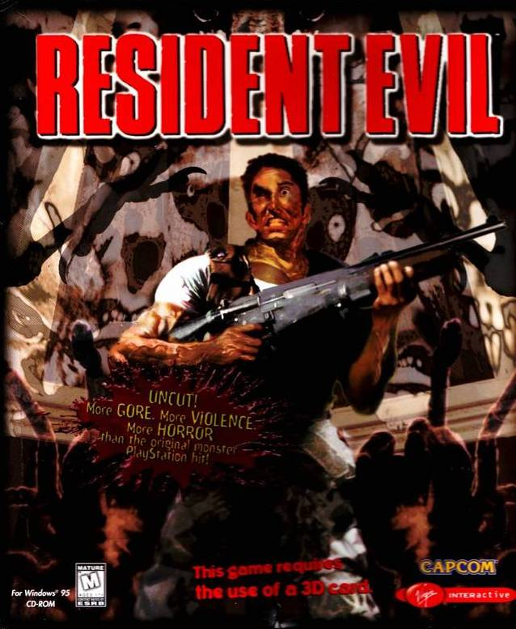
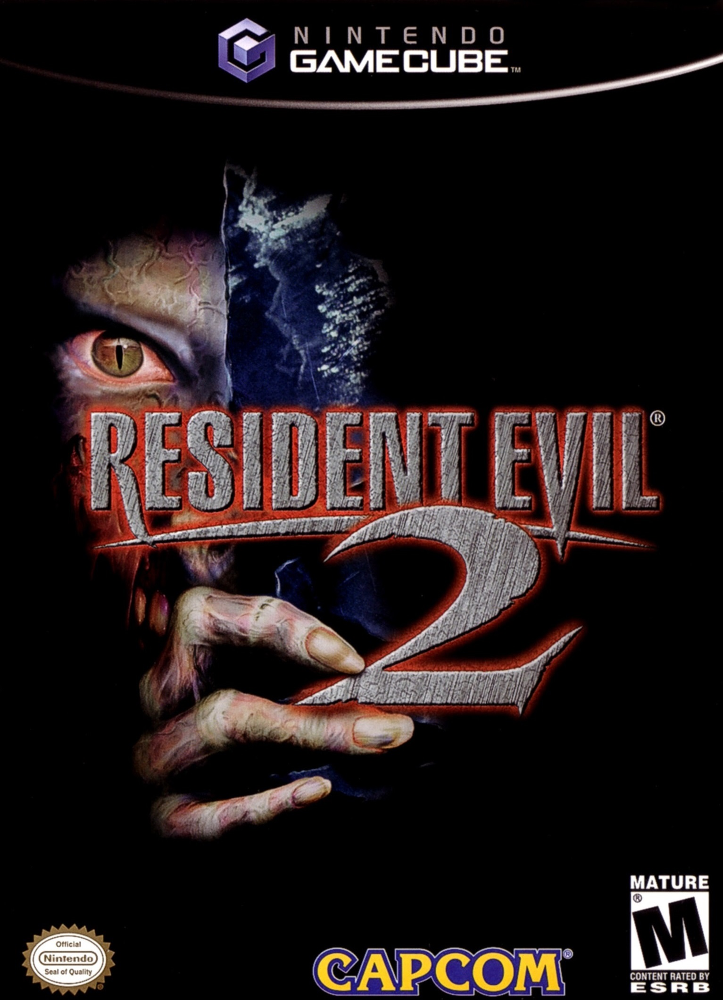
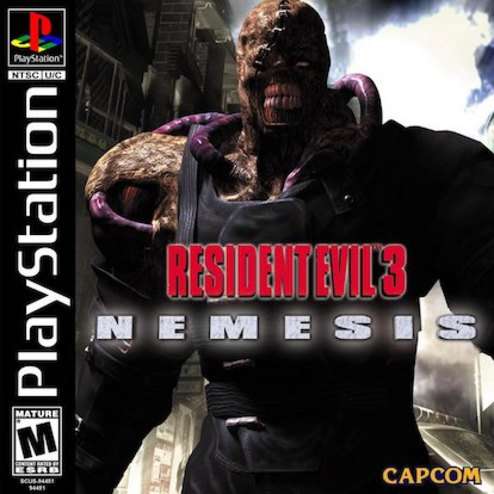
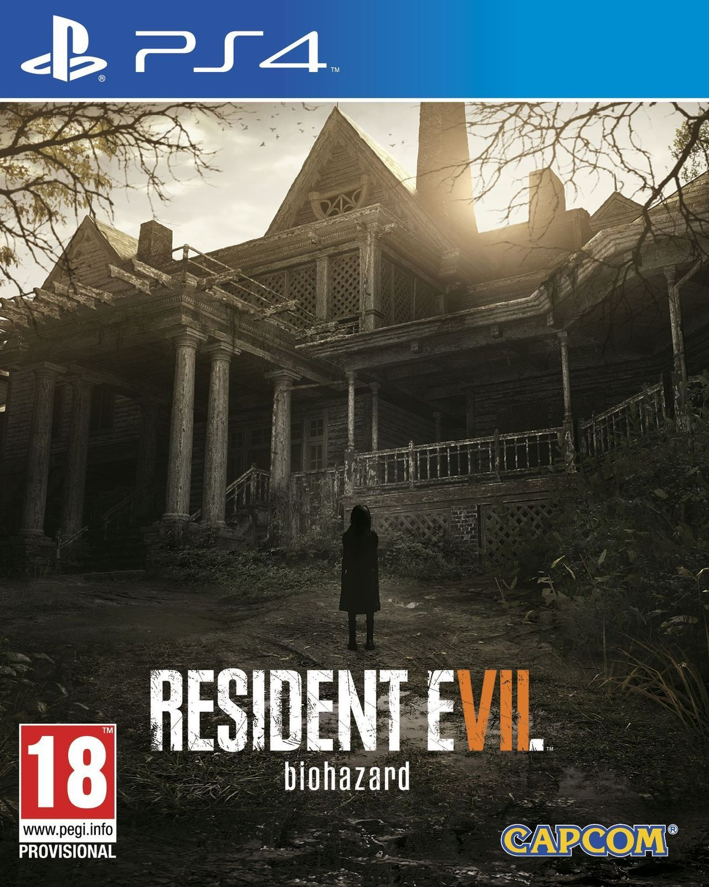
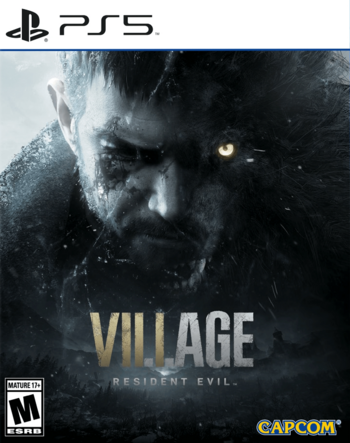

Ethan ha estado viviendo con su esposa Mia y su hija recién nacida Rose. Gracias al agente de la "BSAA" Chris Redfield, Mia fue perdonada por su pasado terrorista en Las Conexiones, con la condición de que ella y su familia estarían permanentemente vigilados. Cuando Chris Redfield y sus hombres aparecen repentinamente, asesinan a Mia a sangre fría, y secuestran a Ethan y a la pequeña Rose.
Nació en 1984 y de adulto conoció a una mujer llamada Mia[1] con el tiempo se volvieron novios y en 2011 se casaron, convirtiéndola en su esposa. Ellos decidieron vivir en Texas donde vivieron felizmente.[2] Durante su relación, Ethan preguntaba sobre el trabajo de Mia, ignorando que trabajaba para Las Conexiones, una compañía que se dedica a la fabricación y producción de armas biológicas. Ella siempre le mentía causando que empezara a desconfiar en ella y que afectara su relación.